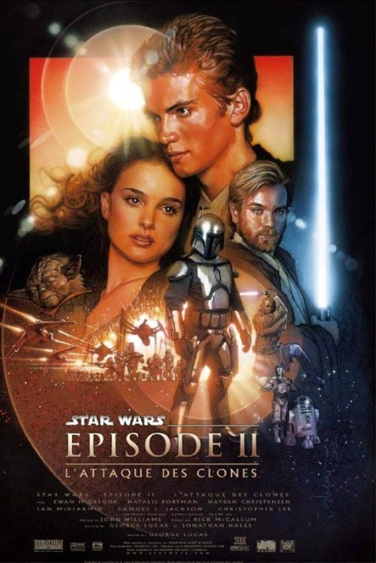

Gregar Typho
Gregar Typho est le neveu du capitaine Panaka et le garde du corps de la sénatrice Padmé Amidala, dont il était fou amoureux, mais il n'a jamais eu l'occasion de le lui avouer. Parvenu à son poste grâce à son indéfectible loyauté envers son oncle, Typho est un novice dans cet environnement dangereux, dont les représentants galactiques du Sénat Galactique sont, eux, familiers. Typho a perdu un œil dans l'exercice de ses fonctions.
| Apparaît dans : | La Revanche des Sith |
|---|---|
| Première apparition : | La Revanche des Sith |
| Affiliations : | CSI |
| Race : | Kaleesh |
| Genre : | Masculin |
| Planète d'origine : | Kalee |
| Métier : | Général |
| Côté de la force : | Obscur |
Rôle dans l'histoire
En 19 av.BY, il décida de retrouver le tueur de Padmé Amidala, et de la venger. Il découvrit que le tueur était Dark Vador. Il réussit à savoir que le Seigneur Sith cherchait le Jedi Jax Pavan à tout prix, plus que les autres Jedi survivants. Il acheta une amulette, qui permettait de se dissimuler de la Force. Il prit contact, déguisé, avec Dark Vador, qui, comme prévu, ne put le sonder. Gregar lui dit qu'il savait où était Jax Pavan, et que, s'il venait au point de rendez-vous sans arme ni soldat, il le lui livrerait.
Comme prévu, Dark Vador arriva seul et non-armé au point de rendez-vous. Evidemment, Gregar n'était pas venu avec Jax Pavan. Il attaqua Vador, mais fut projeté par la Force contre le mur. Ses côtes se brisèrent et il mourut sans avoir pu venger Padmé.
 chewbacca
chewbacca